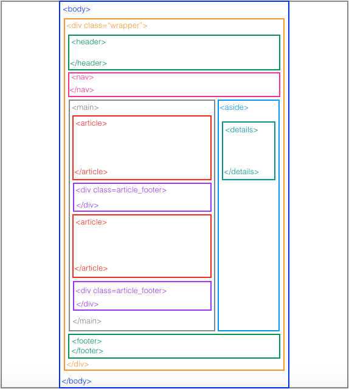

HTML Website Layout
Fixed width layout and 960px width
The first thing to do when you are about to start your web page is to think about the layout, the structure of your page. Of course that is after you have learned about the basic html tags and css syntax (check my previous article on my initial reading list).
It is important to have a look at different website structures to understand what you like and what you don’t like. There are useful articles that analyse the design and give advice to better convey your message (colours, fonts, contrast etc.).
Some websites have a big top catchy title area with pictures or flash animations to draw the user’s attention to explore the website, to navigate more pages using infographics or via a ‘call to action’ and consequently they aim to achieve a lower bounce rate.
Personally I went for a not so big header area, maybe less catchy but in the end it is a blog so I wanted everyone to see at least the beginning of my first article when readers land on the main page.
I believe that I have chosen a pretty standard structure for my blog and I tried to use the adapted html5 elements like <article> , <footer>, <aside>, <details> and <summary>
taking the risk that they might not be understood properly by old browsers as I haven’t adapted my code yet for older browsers - one more task on my blog’s to do list.
My advice is to take a pen and paper before starting to code, and to wireframe the structure desired, draft the different html tags / boxes as it will help you organise your page and think about how you want to present the information.
This is the structure of my blog (for now :) as I am still learning new tricks, the structure might change in the future):

I chose a fixed width layout as to begin with I thought it would easier to control and to accomplish the desired result. This means that the size of my page does not increase or decrease as the user minimises or maximises the browser window. So anything that appears on my blog - the boxes or images - have a fixed size (in pixels as defined in my CSS file) and will always be placed and look as I coded them.
In a liquid layout design, instead of a fixed pixel values, percentages are used.
Example in the CSS for a fixed width layout design, a specific measurement in pixels will be entered:
body {
width: 960px; }
For a liquid layout design, a percentage will be entered, the body width will always fill e.g. 90% of the entire browser window:
body {
width: 90%; }
So with the width added to just give you a general idea:
You will have figured out that my width(main) + width(aside) is not equal to the width(wrapper) as I am using a margin and a padding in my CSS so that the text is not ‘stuck’ to the borders of each element used - I might go through this in my next article. So don’t forget:
width + padding + border + margin = actual width of an element as it appears on your browser
And one last thing, your page must be easily readable and accessible. Remember that there is a high portion of the population that has colour vision deficiency (colour blindness) so you should take that as well into consideration when choosing your colours’ palette.